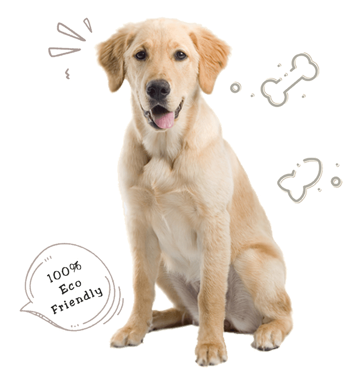

MOBone - A species appropriate diet for Dogs
Shop Now
MOBone - A species appropriate diet for Dogs
Shop Now


MOBone - A species appropriate diet for Dogs.
A species appropriate nutrition is a diet that is appropriate for a specific species. In order to thrive, an animal must eat a diet that its species has evolved to eat – a diet that its body is able to consume and digest effectively.
MOBone is,
So, we understand that one cannot feed a deer to an elephant or a sugarcane to a Lion. Then why feed our Dogs a carb-rich diet!!
Dogs have evolved to eat raw food and have been eating it since their ancestors crawled out of the oceans. Logically, if you feed a diet that is readily recognized, efficiently digested, and easily assimilated by the canine’s body, the overall friction in the system is minimal.
MOBone make this ideal diet practically possible in the urban world.

Some dogs can be defensive and territorial as with any (good) food. But feeding them raw does not make them more aggressive. There are no practical or documented evidence to prove this myth to be true.
Of course, feeding them just the Chicken or any one source of protein for a long duration puts them at a risk of deficiencies or excess of certain nutrients.
An intentional roster of feeding your Dogs raw meaty bones of various small/medium prey animals takes excellent care of their nutritional needs.
MOBone is carefully formulated by certified pet food nutritionists to make sure your Dog gets the ideal amount macro/micronutrients as required. Make sure to treat your Dogs with our varied range of protein sources.
Irrespective of what pets are fed, they are a potential source of zoonotic infections. The best approach to reduce the risk of infection is by responsible human behavior and follow good hygiene practices while handling any pet food. However according to studies, the risks are insignificant and does not outweigh the benefits of sharing our lives with Dogs.
Cooked bones are brittle and splinter as the moisture in them is removed completely. However, raw meaty are soft and easily digestible as are essential part of their nutrition to provide calcium and minerals.
MOBone minces the meat, organ and bones of the prey animals. The wholesome frozed feed is safe to consume and completes the nutritional demands as well.
Feeding Meat, Organs and Bones may seem expensive to start with, but include the un-incurred vet bills for the period you are feeding this diet, you will find this food exponentially cheaper!
For further reading on educational content about feeding meat, organs and bones refer Raw Feeding Veterinary Society
MOBone is responsibly sourced, and the package is 100% eco-friendly.
We believe, all in this Earth is one and indivisible. The choices we make will either support or destruct the self-sustaining eco-system around us.
We chose not to contribute to the chain of wastes choking the land and the oceans with no means to eradicate. We ensure not to support excessive use of chemicals, artificial fertilizers, plastics etc. that harms our habitat throughout the making & packing of all our Products.
Overall, both our produce & package becomes one with the earth in no time, leaving no traces behind. All we leave behind is a happy Dog.